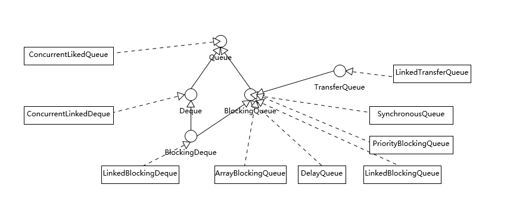

- 00 开篇词 以面试题为切入点，有效提升你的Java内功.md
- 01 谈谈你对Java平台的理解？.md
- 02 Exception和Error有什么区别？.md
- 03 谈谈final、finally、 finalize有什么不同？.md
- 04 强引用、软引用、弱引用、幻象引用有什么区别？.md
- 05 String、StringBuffer、StringBuilder有什么区别？.md
- 06 动态代理是基于什么原理？.md
- 07 int和Integer有什么区别？.md
- 08 对比Vector、ArrayList、LinkedList有何区别？.md
- 09 对比Hashtable、HashMap、TreeMap有什么不同？.md
- 10 如何保证集合是线程安全的_ ConcurrentHashMap如何实现高效地线程安全？.md
- 11 Java提供了哪些IO方式？ NIO如何实现多路复用？.md
- 12 Java有几种文件拷贝方式？哪一种最高效？.md
- 13 谈谈接口和抽象类有什么区别？.md
- 14 谈谈你知道的设计模式？.md
- 15 synchronized和ReentrantLock有什么区别呢？.md
- 16 synchronized底层如何实现？什么是锁的升级、降级？.md
- 17 一个线程两次调用start()方法会出现什么情况？.md
- 18 什么情况下Java程序会产生死锁？如何定位、修复？.md
- 19 Java并发包提供了哪些并发工具类？.md
- 20 并发包中的ConcurrentLinkedQueue和LinkedBlockingQueue有什么区别？.md
- 21 Java并发类库提供的线程池有哪几种？ 分别有什么特点？.md
- 22 AtomicInteger底层实现原理是什么？如何在自己的产品代码中应用CAS操作？.md
- 23 请介绍类加载过程，什么是双亲委派模型？.md
- 24 有哪些方法可以在运行时动态生成一个Java类？.md
- 25 谈谈JVM内存区域的划分，哪些区域可能发生OutOfMemoryError_.md
- 26 如何监控和诊断JVM堆内和堆外内存使用？.md
- 27 Java常见的垃圾收集器有哪些？.md
- 28 谈谈你的GC调优思路_.md
- 29 Java内存模型中的happen-before是什么？.md
- 30 Java程序运行在Docker等容器环境有哪些新问题？.md
- 31 你了解Java应用开发中的注入攻击吗？.md
- 32 如何写出安全的Java代码？.md
- 33 后台服务出现明显“变慢”，谈谈你的诊断思路？.md
- 34 有人说“Lambda能让Java程序慢30倍”，你怎么看？.md
- 35 JVM优化Java代码时都做了什么？.md
- 36 谈谈MySQL支持的事务隔离级别，以及悲观锁和乐观锁的原理和应用场景？.md
- 37 谈谈Spring Bean的生命周期和作用域？.md
- 38 对比Java标准NIO类库，你知道Netty是如何实现更高性能的吗？.md
- 39 谈谈常用的分布式ID的设计方案？Snowflake是否受冬令时切换影响？.md
- 周末福利 谈谈我对Java学习和面试的看法.md
- 结束语 技术没有终点.md
20 并发包中的ConcurrentLinkedQueue和LinkedBlockingQueue有什么区别？
在上一讲中，我分析了Java并发包中的部分内容，今天我来介绍一下线程安全队列。Java标准库提供了非常多的线程安全队列，很容易混淆。
今天我要问你的问题是，并发包中的ConcurrentLinkedQueue和LinkedBlockingQueue有什么区别？
典型回答
有时候我们把并发包下面的所有容器都习惯叫作并发容器，但是严格来讲，类似ConcurrentLinkedQueue这种“Concurrent*”容器，才是真正代表并发。
关于问题中它们的区别：
-
Concurrent类型基于lock-free，在常见的多线程访问场景，一般可以提供较高吞吐量。
-
而LinkedBlockingQueue内部则是基于锁，并提供了BlockingQueue的等待性方法。
不知道你有没有注意到，java.util.concurrent包提供的容器（Queue、List、Set）、Map，从命名上可以大概区分为Concurrent*、CopyOnWrite_和Blocking_等三类，同样是线程安全容器，可以简单认为：
-
Concurrent类型没有类似CopyOnWrite之类容器相对较重的修改开销。
-
但是，凡事都是有代价的，Concurrent往往提供了较低的遍历一致性。你可以这样理解所谓的弱一致性，例如，当利用迭代器遍历时，如果容器发生修改，迭代器仍然可以继续进行遍历。
-
与弱一致性对应的，就是我介绍过的同步容器常见的行为“fail-fast”，也就是检测到容器在遍历过程中发生了修改，则抛出ConcurrentModificationException，不再继续遍历。
-
弱一致性的另外一个体现是，size等操作准确性是有限的，未必是100%准确。
-
与此同时，读取的性能具有一定的不确定性。
考点分析
今天的问题是又是一个引子，考察你是否了解并发包内部不同容器实现的设计目的和实现区别。
队列是非常重要的数据结构，我们日常开发中很多线程间数据传递都要依赖于它，Executor框架提供的各种线程池，同样无法离开队列。面试官可以从不同角度考察，比如：
-
哪些队列是有界的，哪些是无界的？（很多同学反馈了这个问题）
-
针对特定场景需求，如何选择合适的队列实现？
-
从源码的角度，常见的线程安全队列是如何实现的，并进行了哪些改进以提高性能表现？
为了能更好地理解这一讲，需要你掌握一些基本的队列本身和数据结构方面知识，如果这方面知识比较薄弱，《数据结构与算法分析》是一本比较全面的参考书，专栏还是尽量专注于Java领域的特性。
知识扩展
线程安全队列一览
我在[专栏第8讲]中介绍过，常见的集合中如LinkedList是个Deque，只不过不是线程安全的。下面这张图是Java并发类库提供的各种各样的线程安全队列实现，注意，图中并未将非线程安全部分包含进来。

我们可以从不同的角度进行分类，从基本的数据结构的角度分析，有两个特别的Deque实现，ConcurrentLinkedDeque和LinkedBlockingDeque。Deque的侧重点是支持对队列头尾都进行插入和删除，所以提供了特定的方法，如:
-
尾部插入时需要的addLast(e)、offerLast(e)。
-
尾部删除所需要的removeLast()、pollLast()。
从上面这些角度，能够理解ConcurrentLinkedDeque和LinkedBlockingQueue的主要功能区别，也就足够日常开发的需要了。但是如果我们深入一些，通常会更加关注下面这些方面。
从行为特征来看，绝大部分Queue都是实现了BlockingQueue接口。在常规队列操作基础上，Blocking意味着其提供了特定的等待性操作，获取时（take）等待元素进队，或者插入时（put）等待队列出现空位。
/**
* 获取并移除队列头结点，如果必要，其会等待直到队列出现元素
…
*/
E take() throws InterruptedException;
/**
* 插入元素，如果队列已满，则等待直到队列出现空闲空间
…
*/
void put(E e) throws InterruptedException;
另一个BlockingQueue经常被考察的点，就是是否有界（Bounded、Unbounded），这一点也往往会影响我们在应用开发中的选择，我这里简单总结一下。
-
ArrayBlockingQueue是最典型的的有界队列，其内部以final的数组保存数据，数组的大小就决定了队列的边界，所以我们在创建ArrayBlockingQueue时，都要指定容量，如
public ArrayBlockingQueue(int capacity, boolean fair)
-
LinkedBlockingQueue，容易被误解为无边界，但其实其行为和内部代码都是基于有界的逻辑实现的，只不过如果我们没有在创建队列时就指定容量，那么其容量限制就自动被设置为Integer.MAX_VALUE，成为了无界队列。
-
SynchronousQueue，这是一个非常奇葩的队列实现，每个删除操作都要等待插入操作，反之每个插入操作也都要等待删除动作。那么这个队列的容量是多少呢？是1吗？其实不是的，其内部容量是0。
-
PriorityBlockingQueue是无边界的优先队列，虽然严格意义上来讲，其大小总归是要受系统资源影响。
-
DelayedQueue和LinkedTransferQueue同样是无边界的队列。对于无边界的队列，有一个自然的结果，就是put操作永远也不会发生其他BlockingQueue的那种等待情况。
如果我们分析不同队列的底层实现，BlockingQueue基本都是基于锁实现，一起来看看典型的LinkedBlockingQueue。
/** Lock held by take, poll, etc */
private final ReentrantLock takeLock = new ReentrantLock();
/** Wait queue for waiting takes */
private final Condition notEmpty = takeLock.newCondition();
/** Lock held by put, offer, etc */
private final ReentrantLock putLock = new ReentrantLock();
/** Wait queue for waiting puts */
private final Condition notFull = putLock.newCondition();
我在介绍ReentrantLock的条件变量用法的时候分析过ArrayBlockingQueue，不知道你有没有注意到，其条件变量与LinkedBlockingQueue版本的实现是有区别的。notEmpty、notFull都是同一个再入锁的条件变量，而LinkedBlockingQueue则改进了锁操作的粒度，头、尾操作使用不同的锁，所以在通用场景下，它的吞吐量相对要更好一些。
下面的take方法与ArrayBlockingQueue中的实现，也是有不同的，由于其内部结构是链表，需要自己维护元素数量值，请参考下面的代码。
public E take() throws InterruptedException {
final E x;
final int c;
final AtomicInteger count = this.count;
final ReentrantLock takeLock = this.takeLock;
takeLock.lockInterruptibly();
try {
while (count.get() == 0) {
notEmpty.await();
}
x = dequeue();
c = count.getAndDecrement();
if (c > 1)
notEmpty.signal();
} finally {
takeLock.unlock();
}
if (c == capacity)
signalNotFull();
return x;
}
类似ConcurrentLinkedQueue等，则是基于CAS的无锁技术，不需要在每个操作时使用锁，所以扩展性表现要更加优异。
相对比较另类的SynchronousQueue，在Java 6中，其实现发生了非常大的变化，利用CAS替换掉了原本基于锁的逻辑，同步开销比较小。它是Executors.newCachedThreadPool()的默认队列。
队列使用场景与典型用例
在实际开发中，我提到过Queue被广泛使用在生产者-消费者场景，比如利用BlockingQueue来实现，由于其提供的等待机制，我们可以少操心很多协调工作，你可以参考下面样例代码：
import java.util.concurrent.ArrayBlockingQueue;
import java.util.concurrent.BlockingQueue;
public class ConsumerProducer {
public static final String EXIT_MSG = "Good bye!";
public static void main(String[] args) {
// 使用较小的队列，以更好地在输出中展示其影响
BlockingQueue<String> queue = new ArrayBlockingQueue<>(3);
Producer producer = new Producer(queue);
Consumer consumer = new Consumer(queue);
new Thread(producer).start();
new Thread(consumer).start();
}
static class Producer implements Runnable {
private BlockingQueue<String> queue;
public Producer(BlockingQueue<String> q) {
this.queue = q;
}
@Override
public void run() {
for (int i = 0; i < 20; i++) {
try{
Thread.sleep(5L);
String msg = "Message" + i;
System.out.println("Produced new item: " + msg);
queue.put(msg);
} catch (InterruptedException e) {
e.printStackTrace();
}
}
try {
System.out.println("Time to say good bye!");
queue.put(EXIT_MSG);
} catch (InterruptedException e) {
e.printStackTrace();
}
}
}
static class Consumer implements Runnable{
private BlockingQueue<String> queue;
public Consumer(BlockingQueue<String> q){
this.queue=q;
}
@Override
public void run() {
try{
String msg;
while(!EXIT_MSG.equalsIgnoreCase( (msg = queue.take()))){
System.out.println("Consumed item: " + msg);
Thread.sleep(10L);
}
System.out.println("Got exit message, bye!");
}catch(InterruptedException e) {
e.printStackTrace();
}
}
}
}
上面是一个典型的生产者-消费者样例，如果使用非Blocking的队列，那么我们就要自己去实现轮询、条件判断（如检查poll返回值是否null）等逻辑，如果没有特别的场景要求，Blocking实现起来代码更加简单、直观。
前面介绍了各种队列实现，在日常的应用开发中，如何进行选择呢？
以LinkedBlockingQueue、ArrayBlockingQueue和SynchronousQueue为例，我们一起来分析一下，根据需求可以从很多方面考量：
-
考虑应用场景中对队列边界的要求。ArrayBlockingQueue是有明确的容量限制的，而LinkedBlockingQueue则取决于我们是否在创建时指定，SynchronousQueue则干脆不能缓存任何元素。
-
从空间利用角度，数组结构的ArrayBlockingQueue要比LinkedBlockingQueue紧凑，因为其不需要创建所谓节点，但是其初始分配阶段就需要一段连续的空间，所以初始内存需求更大。
-
通用场景中，LinkedBlockingQueue的吞吐量一般优于ArrayBlockingQueue，因为它实现了更加细粒度的锁操作。
-
ArrayBlockingQueue实现比较简单，性能更好预测，属于表现稳定的“选手”。
-
如果我们需要实现的是两个线程之间接力性（handoff）的场景，按照[专栏上一讲]的例子，你可能会选择CountDownLatch，但是SynchronousQueue也是完美符合这种场景的，而且线程间协调和数据传输统一起来，代码更加规范。
-
可能令人意外的是，很多时候SynchronousQueue的性能表现，往往大大超过其他实现，尤其是在队列元素较小的场景。
今天我分析了Java中让人眼花缭乱的各种线程安全队列，试图从几个角度，让每个队列的特点更加明确，进而希望减少你在日常工作中使用时的困扰。
一课一练
关于今天我们讨论的题目你做到心中有数了吗？ 今天的内容侧重于Java自身的角度，面试官也可能从算法的角度来考察，所以今天留给你的思考题是，指定某种结构，比如栈，用它实现一个BlockingQueue，实现思路是怎样的呢？
请你在留言区写写你对这个问题的思考，我会选出经过认真思考的留言，送给你一份学习奖励礼券，欢迎你与我一起讨论。
你的朋友是不是也在准备面试呢？你可以“请朋友读”，把今天的题目分享给好友，或许你能帮到他。
© 2019 - 2023 Liangliang Lee. Powered by Vert.x and hexo-theme-book.